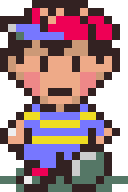
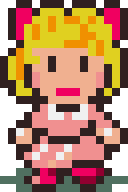
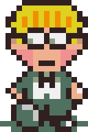
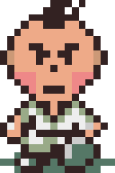

Giygas invade!! Aliens bizarros andam pela Terra!!
Terror intergalático atinge a pequena cidade de Onett, quando um objeto extraterrestre pegando fogo(blazing) colide à noite! Agora a Terra enfrenta destruição iminente pelo mal conhecido como Giygas!
Armado com um taco de baseball rachado, um cookie e um cartão de crédito, um corajoso rapaz chamado Ness jura salvar o planeta da destruição absoluta. Ele deve primeiro encontrar seus companheiros heróicos, Paula, Jeff e Poo, ao longo do caminho para oito locais misteriosos chamados de "Your Sanctuary" para ganhar poder e colocar um fim à ameaça interestelar. Os cidadões de Onett dão o seu apoio por meio de gadgets altamente tecnológicos, máquinas do tempo robóticas e estórias excêntricas sobre a vida.
Aliens a espreita e fenômenos inexplicaveis estão sendo reportados no interior. Nossos quatro prodígios (wonderkids) se juntam com inovação, poderes psíquicos e armas engenhosas. Será que Ness conseguirá derrotar os inúmeros monstros assustadores na sua jornada? O teste final será o encontro inevitável com o todo-poderoso Giygas!
THIS IS YOU!
 |
Description |
|---|---|
| He is described as being brave and courageous, as well as kind and helpful | |
| Ness appears to have an interest in baseball due to his primary choice of weapons being baseball bats and his baseball cap having his favorite team logo on it | |
| Ness's favorite food is steak, it's implied that his family has steak often because of him | |
| Ness is implied to be close to his home and his family, as implied by how he starts feeling homesick if he is away from home for long | |
| the only way to cure his homesickness is talking to his mother, |
YOUR FRIEND OF MIND
|
 |
Descrição |
|---|---|
| Paula is a very kind and helpful young girl. | |
| The children at Polestar Preschool look up to her as a motherly figure. | |
| Paula appears to have an interest in Teddy bears, as she has one in the cell with her when she is imprisoned by Carpainter, and she also has a Teddy bear in her room at her house, inside a present. |
YOUR DEAR FRIEND
|
 |
Descrição |
|---|---|
| Jeff's personality is shown as being shy, clumsy and reckless, and he also admitted he is nearsighted | |
| He is, however, a very smart individual, reflected by his high IQ stat | |
| He is able to repair broken items into weapons or other useful goods throughout the night |
YOUR BIG FRIEND
 |
Descrição |
|---|---|
| Poo is very friendly with the people in his kingdom, appearing to be especially popular with the women of Dalaam | |
| Poo is also a serious and dedicated individual, appearing to take his training very seriously, as some women mention he'd rather train than hang out with them | |
| Poo also shows strong loyalty, saying he will follow Ness and obey him as his master |